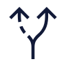

Starts an action. One solid button per view; the rest go outline or ghost.
Frontend field guide
Every component, shown working.
Seven families, one line each, and a live example you can click, type in, and tab through.
01 · 5 components
Actions
Button, icon button, link, states, inverse
02 · 9 componentsInputs
Text, search, select, date, checks, switch, upload, chips

03 · 7 componentsNavigation
Site nav, sidebar, tabs, breadcrumbs, pagination, stepper
04 · 6 componentsFeedback
Alert, toast, badge, meter, empty state, field error
05 · 8 componentsData display
Card, stat, table, chart, avatar, tag, timeline, quote
06 · 8 componentsLayout
Grid, section, hero, accordion, media, feature card, divider, footer
07 · 4 componentsOverlays
Modal, dropdown, mega menu, chat assistant
In this guide
47
Live components
01 · Actions
5 components
Things people press.
An action with no label, for toolbars. Always carries an accessible name.
Moves somewhere else. Use it inside copy and cards, not for actions.
Shows when an action is busy or not yet allowed.
The same button for navy bands and photos.
02 · Inputs
9 components
Things people fill in.
Free text with a visible label and an optional hint.
Tab here to see the focus ring.
Fixes a unit or prefix next to the value.
EUR
Finds things fast. The only rounded input.
Picks one value from a short, fixed list.
The native calendar, styled like any input.
Checkboxes pick many; radios pick exactly one.
Turns a setting on or off, applied straight away.
A drop zone around a real file input.
PDF or DOCX, up to 10 MB.
Narrows a list in one tap. Click one to move the selection.
04 · Feedback
6 components
How the interface answers.
A message that stays on the page until the situation changes.
Report published
Everyone on the project can read it.
Review due
Two workstreams are waiting on a decision.
Upload failed
The file is larger than 20 MB.
Confirms something just happened, then leaves on its own.
Labels the state of an item at a glance.
On track
At risk
Blocked
In review
New
Shows how far along a known amount of work is.
Pilot readiness, 72%
Says exactly what to fix, right under the field.
Enter a number, for example 12.
Fills the gap when a list has nothing to show.
No results
Try a different filter.
05 · Data display
8 components, sample data
How information gets read.
Groups related content on one flat, bordered surface.
Decision journey
Three steps from brief to pilot.
One number that matters, with its trend.
Adoption
92%
Up 6 pts vs Q2
Puts a face or initials next to a person.
JO
Compares rows of the same kind. Numbers align right.
| Workstream | Owner | Status | |
|---|---|---|---|
| Research | Elena | On track | 84% |
| Data platform | Marcus | At risk | 46% |
| Pilot | Mei | In review | 20% |
Labels a category. Some can be removed.
Strategy
Design
Data
Turns numbers into a shape you can compare at a glance.
- Received
- Resolved
Lists events in order, newest first.
13 Oct
Pilot approved
06 Oct
Design review held
29 Sep
Project started
Lets a person speak in their own words, with who said it.
[The quote goes here.]
06 · Layout
8 components
How a page holds together.
Centres the content and splits it into columns that stack on a phone.
1
2
3
Sets the vertical rhythm. Bands alternate plain, grey, and navy, like this page.
The opening claim of a page: one headline, one line, one action.
Every component, shown working.
See the full heroHides detail until someone asks for it.
What is a component?
A reusable piece of interface with one job.
Why group them?
So you reach for the right one faster.
Crops a photo to a fixed ratio without distortion.
An icon, a title, and two short sentences about one idea.
Frame the problem
Start from the decision to make.
The Progress Bar, used as a rule between moments. Always left to right.
Closes every page with the logo, key links, and legal line.
07 · Overlays
4 components
What appears on top.
Asks for a decision before anything else can happen.
Opens a short list of actions from one button.
Export
A floating helper that opens a conversation. Try the round button in the bottom corner.
A wide panel that shows a whole section of a site at once.